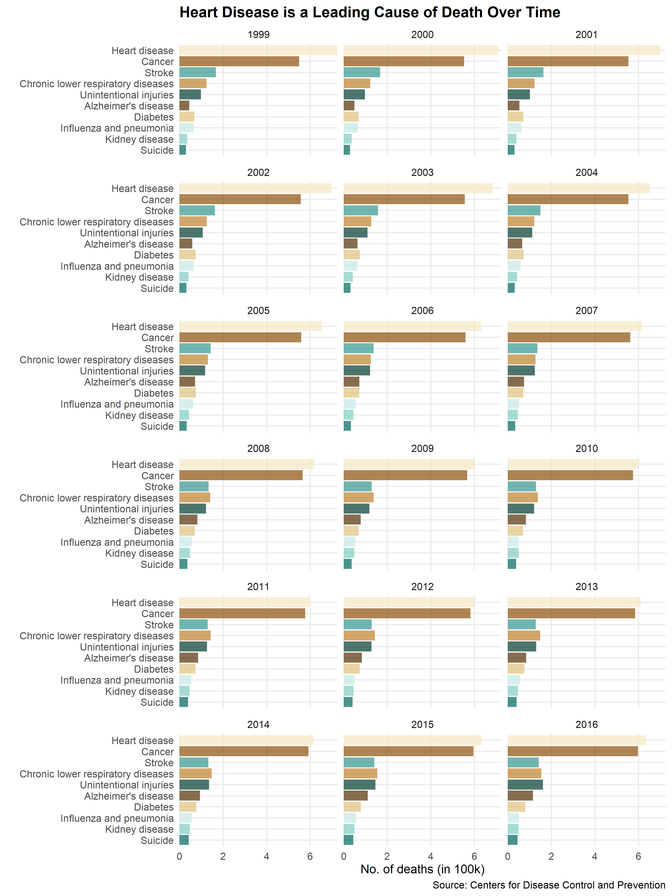
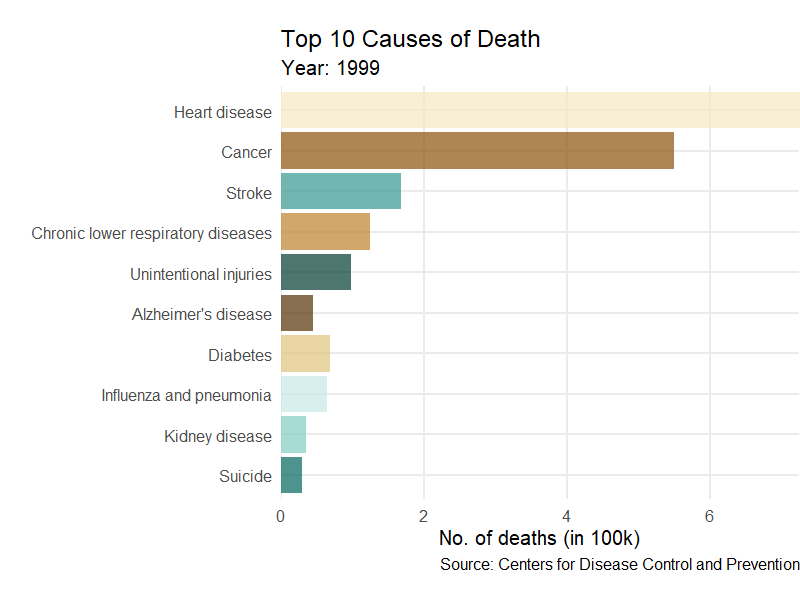

The dataset, called “Leading Causes of Death: United States” was published by Centers for Disease Control and Prevention. The data presents age-adjusted death rates for 10 leading causes of death in the United States from 1999 to 2016. According to the publisher, the data are based on the information from all resident death certificates filed in the 50 states and the District of Columbia using demographic and medical characteristics.
The R project aims to answer the following three questions by demonstrating three main data vidualizations:
Q1. How do leading causes of death change over past 18 years?
Q2. What are changing patterns of each leading cause of death over years?
Q3. What are distinct causes of death in each state of the United States?
This post presents the first part of the project, in which data visualization for Q1 is shown along with steps leading to the final plot.
First, required packages are as follows:
install.packages("rio")
install.packages("here")
install.packages("tidyverse")
install.packages("skimr")
install.packages("janitor")
install.packages("gganimate")
install.packages("paletteer") # for colorsSecond, load packages and set up the global settings:
library(tidyverse)
library(rio)
library(here)
library(skimr)
library(janitor)
library(gganimate)
library(paletteer)
knitr::opts_chunk$set(echo = TRUE,
message = FALSE,
warning = FALSE)Data preparation
Import data with clean variable names and name it as df.
df <- import(here::here("data", "Leading_Causes_of_Death__United_States.csv"),
setclass = "tbl_df") %>%
janitor::clean_names()
str(df)
Classes 'tbl_df', 'tbl' and 'data.frame': 10296 obs. of 6 variables:
$ year : int 2016 2016 2016 2016 2016 2016 2016 2016 2016 2016 ...
$ x113_cause_name : chr "Accidents (unintentional injuries) (V01-X59,Y85-Y86)" "Accidents (unintentional injuries) (V01-X59,Y85-Y86)" "Accidents (unintentional injuries) (V01-X59,Y85-Y86)" "Accidents (unintentional injuries) (V01-X59,Y85-Y86)" ...
$ cause_name : chr "Unintentional injuries" "Unintentional injuries" "Unintentional injuries" "Unintentional injuries" ...
$ state : chr "Alabama" "Alaska" "Arizona" "Arkansas" ...
$ deaths : int 2755 439 4010 1604 13213 2880 1978 516 401 12561 ...
$ age_adjusted_death_rate: num 55.5 63.1 54.2 51.8 32 51.2 50.3 52.4 58.3 54.9 ...Data overview
The original dataset contains 6 variables, including year, x113_cause_name, cause_name, state, deaths, age_adjusted_death_rate. Before visiualizing data, I always find useful to clean dataset and do the following steps:
dplyr::selectuseful variablesdplyr::mutatevariable types accordingly, including usingforcat::as.factor, and change value names or transform data value if necessary.dplyr::filterto keep useful observation
tidy_df <- df %>%
dplyr::select(year, cause_name, state, deaths, age_adjusted_death_rate) %>%
mutate(cause = as_factor(cause_name),
state = as_factor(state),
#transform rate to decimal value not %
rate = age_adjusted_death_rate/100) %>%
dplyr::select(year, state, cause, deaths, rate) %>%
# filter out "all causes"
filter(cause != "All causes",
state != "United States") %>%
# replace "CLRD" with its whole name
mutate(cause = replace(as.character(cause), cause == "CLRD",
"Chronic lower respiratory diseases"))
skim(tidy_df)
Skim summary statistics
n obs: 9180
n variables: 5
-- Variable type:character -----------------------------------------------------------------------------------------------
variable missing complete n min max empty n_unique
cause 0 9180 9180 6 34 0 10
-- Variable type:factor --------------------------------------------------------------------------------------------------
variable missing complete n n_unique
state 0 9180 9180 51
top_counts ordered
Ala: 180, Ala: 180, Ari: 180, Ark: 180 FALSE
-- Variable type:integer -------------------------------------------------------------------------------------------------
variable missing complete n mean sd p0 p25 p50
deaths 0 9180 9180 3725.39 7161.71 21 526 1401.5
year 0 9180 9180 2007.5 5.19 1999 2003 2007.5
p75 p100 hist
3228.25 71930 <U+2587><U+2581><U+2581><U+2581><U+2581><U+2581><U+2581><U+2581>
2012 2016 <U+2587><U+2585><U+2585><U+2585><U+2585><U+2585><U+2585><U+2587>
-- Variable type:numeric -------------------------------------------------------------------------------------------------
variable missing complete n mean sd p0 p25 p50 p75 p100
rate 0 9180 9180 0.61 0.68 0.026 0.18 0.31 0.55 3.47
hist
<U+2587><U+2582><U+2581><U+2581><U+2581><U+2581><U+2581><U+2581>Summary of data
- No missing data.
- There are 10 causes of death, including Unintentional injuries, Alzheimer’s disease, Cancer, Chronic lower respiratory diseases, Diabetes, Heart disease, Influenza and pneumonia, Kidney disease, Stroke, Suicide.
- There are 51 states.
- Dataframe has data from 1999 to 2016 (18 years).
Data visulization
The first #dataviz of this R project is intended to deliver a message to general population and to answer how leading death causes change over years. In addition to showing the final plot, I include all iterations of plots and broke down the problem into sub-problems/versions leading up to my final plot.
First plot- bar chart
plot1_v1 <- tidy_df %>%
# calculate yearly total deaths from all states
group_by(year, cause) %>%
summarise(deaths_by_year_cause = sum(deaths)) %>%
# plot
ggplot(aes(x = fct_reorder(cause, deaths_by_year_cause),
y = deaths_by_year_cause/100000)) +
geom_col(fill = "steelblue",
alpha = 0.7) +
scale_y_continuous(expand = c(0, 0)) +
coord_flip() +
facet_wrap(~year, ncol = 3) +
theme_minimal(base_size = 20) +
theme(panel.grid.minor = element_blank(),
plot.title = element_text(face = "bold")) +
labs(y = "No. of deaths (in 100k)",
x = "Causes of deaths",
title = "Heart disease is a leading cause of death over years",
caption = "Source: Centers for Disease Control and Prevention")
plot1_v1Second plot- bar chart with colors
From the graph it is easy to tell heart disease is shown to be a leading cause of death over years while cancer is a close number 2.
One feedback from a peer reviewer is the single color on the chart. One palette I originally plan to use is colorblindr::scale_fill_OkabeIto, but it has only 8 colors while there are 10 causes of death to be plot. I end up using one of the diverging palette from colorbrewer 2.0.
tidy_df %>%
# calculate yearly total deaths from all states
group_by(year, cause) %>%
summarise(deaths_by_year_cause = sum(deaths)) %>%
# plot
ggplot(aes(x = fct_reorder(cause, deaths_by_year_cause),
y = deaths_by_year_cause/100000,
fill = cause)) +
geom_col(alpha = 0.7) +
scale_y_continuous(expand = c(0, 0)) +
scale_fill_brewer(palette = "BrBG") +
coord_flip() +
facet_wrap(~year, ncol = 3) +
theme_minimal(base_size = 20) +
theme(panel.grid.minor = element_blank(),
plot.title = element_text(face = "bold"),
legend.position = "none") +
labs(y = "No. of deaths (in 100k)",
x = " ",
title = "Heart disease is a leading cause of death over years",
caption = "Source: Centers for Disease Control and Prevention")
Third plot- animated bar chart
Although the top 2 causes have a clear trend and rank over years, a total of 18 facets make it hard to compare amounts of death and ranks of causes across years. Therefore I used {gganimate} package to condense information to a single year and animate changes over years.
plot1_v2 <- tidy_df %>%
group_by(year, cause) %>%
summarise(deaths_by_year_cause = sum(deaths)) %>%
# plot
ggplot(aes(x = fct_reorder(cause, deaths_by_year_cause),
y = deaths_by_year_cause/100000,
fill = cause)) +
geom_col(alpha = 0.7) +
scale_y_continuous(expand = c(0, 0)) +
scale_fill_brewer(palette = "BrBG") +
coord_flip() +
theme_minimal(base_size = 20) +
theme(panel.grid.minor = element_blank(),
plot.margin = margin(1, 0, 1, 0.3, "cm"),
legend.position = "none") +
transition_time(year) +
labs(title = "Top 10 Causes of Deaths",
subtitle = "Year: {round(frame_time)}",
caption = "Source: Centers for Disease Control and Prevention",
y = "No. of deaths (in 100k)",
x = "")
animate(plot1_v2, duration = 25, nframes = 100, end_pause = 10,
width = 800, height = 600, renderer = gifski_renderer("ani_bar.gif"))
Forth plot- rank chart
Although the animation shows clear changes in amount of death across years, the rank of causes did not demonstrated properly on y-axis even using fct_reorder. Therefore, here is another version:
plot1_v3 <- tidy_df %>%
group_by(year, cause) %>%
summarise(deaths_by_year_cause = sum(deaths)) %>%
# creat rank per year
group_by(year) %>%
arrange(desc(deaths_by_year_cause)) %>%
mutate(rank = row_number()) %>%
arrange(year) %>%
ungroup() %>%
#plot
ggplot(aes(x = '{frame_time}', y = rank)) +
geom_text(aes(label = cause,
color = cause,
group = cause),
size = 8) +
scale_x_discrete(labels = NULL) +
scale_y_reverse() +
scale_color_paletteer_d(rcartocolor, Vivid) +
transition_states(year,
transition_length = 1,
state_length = 3) +
ease_aes('sine-in-out') +
theme_void(base_size = 28) +
theme(plot.title = element_text(hjust = 0.5)) +
labs(title = "Top 10 Causes of Death in {closest_state}",
caption = "Source: Centers for Disease Control and Prevention") +
guides(color = "none")
animate(plot1_v3, duration = 30, nframes = 300,
width = 800, height = 600, end_pause = 10,
renderer = gifski_renderer("ani_rank.gif"))
Fifth chart- animated sorted bar chart
This version of data visualization allows us to see changes in rank of causes over years, for example, the rank of Alzheimer’s disease increased from 2003-2004 and 2006-2007. Nevertheless, My peer reviewr and I both prefer the previous version because it provides more info in terms of how far ahead one cause is from another cause.
I spent a good amount of time to figure out how I could change the ranks of cause over y-axis. This stackoverflow thread exactly teaches me how to do it.
Here is the static version with only year 2016 shown in the figure:
Let’s see how I make it alive with {gganimate}!
plot1_ani <- tidy_df %>%
group_by(year, cause) %>%
summarise(deaths_by_year_cause = sum(deaths)) %>%
group_by(year) %>%
# create rank variable and variable label
mutate(rank = row_number(-deaths_by_year_cause),
val_lbl = paste0(" ", deaths_by_year_cause)) %>%
ungroup() %>%
ggplot(aes(x = rank, group = cause, fill = cause, color = cause)) +
geom_tile(aes(y = deaths_by_year_cause/2,
height = deaths_by_year_cause,
width = 0.9),
alpha = 0.8) +
coord_flip(clip = "off", expand = FALSE) +
scale_x_reverse() +
scale_fill_brewer(palette = "BrBG") +
scale_color_brewer(palette = "BrBG") +
geom_text(aes(y = 0, label = paste(cause, " "), vjust = 0.2, hjust = 1),
color = "black", size = 5) +
geom_text(aes(y = deaths_by_year_cause, label = val_lbl), hjust = 0,
color = "black") +
guides(color = FALSE, fill = FALSE) +
theme_classic() +
theme(plot.title = element_text(hjust = 0, vjust = 0.5, size = 22),
plot.caption = element_text(size = 13),
axis.ticks.y = element_blank(),
axis.text.y = element_blank(),
axis.text.x = element_text(size = 15),
plot.margin = margin(1, 2, 1, 5.5, "cm")) +
labs(title='Top 10 Causes of Death in {closest_state}',
x = "",
y = "",
caption = "Source: Centers for Disease Control and Prevention") +
transition_states(year, transition_length = 4, state_length = 1) +
ease_aes("cubic-in-out")
animate(plot1_ani, 200, fps = 10, duration = 30, end_pause = 10,
width = 800, height = 600,
renderer = gifski_renderer("plot1_ani.gif"))The key feature here is to use geom_tile to allow the bars slide positions. Other things I’ve learned through this plot are the use of clip = "off" in coord_flip, which allows drawing of data points anywhere on the plot and the use of expand = FALSE to add a small expansion factor to the limits to ensure that data and axes don’t overlap.
Conclusion
Heart disease is a leading cause of death over years and cancer is the second of highest. The top two causes individually take three tims more of deaths compare to all the other causes every year. It seems Alzheimer’s disease increases its rank on the top 10 causes of death over years.